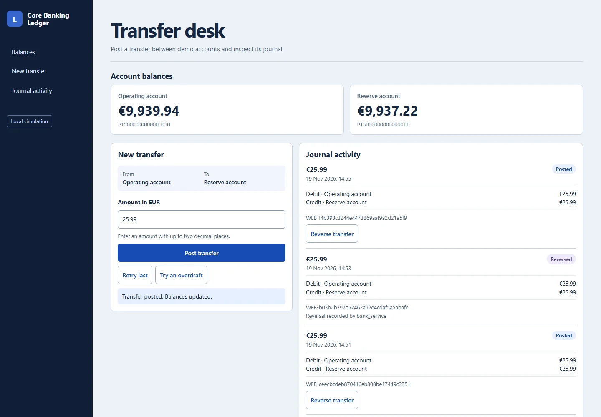
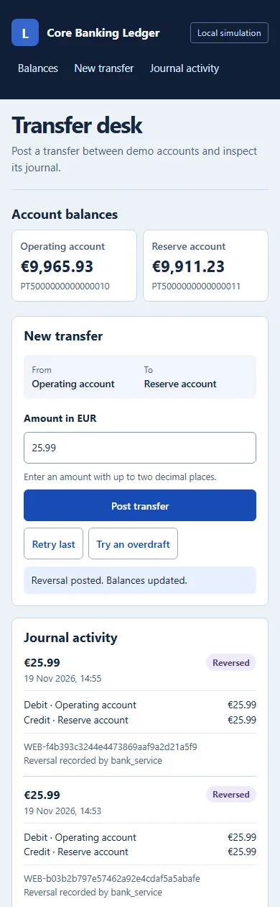
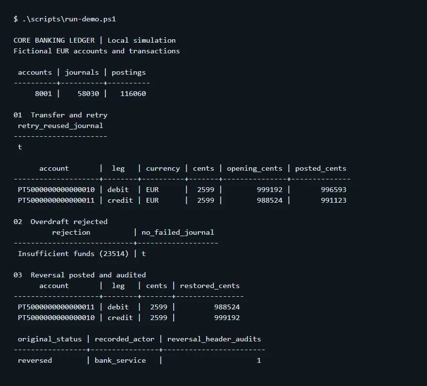

Featured project · Runtime screenshot
Core Banking Ledger
Post a transfer once, retry it safely, reject an overdraft and inspect an audited reversal.
Local demo · Project lead
Public source access pending.
My contribution
I led development of this project.
Run the local demo
From the prepared project checkout, run these commands and open the address printed by the server. The repository may require access.
cd core-banking-ledger/core-banking-ledger
# Use an isolated Compose project and free database port as documented.
docker compose up -d --wait --wait-timeout 600
node scripts/web-demo.mjs
# Open http://127.0.0.1:4176


Problem
Transfers must remain balanced and authorized when requests repeat or competing sessions debit the same account.
Architecture
PostgreSQL stores immutable double-entry journals, posting legs and audit records. Controlled functions calculate balances from the ledger. The loopback Node transfer desk calls the same posting functions as the terminal walkthrough.
Engineering decisions
- Calculate authoritative balances from posting legs instead of a separately mutable balance column.
- Accept matching retry references only for the same authorized principal and payload.
Implemented workflow
- Post a fictional EUR 25.99 transfer and inspect both ledger legs.
- Retry the transfer and confirm that the balance changes once.
- Reject an overdraft, then create a compensating reversal with audit history.
Checks and evidence
The source handoff records four SQL contract suites, two concurrent transfer scenarios, eight reporting queries and an upgrade preserving record counts. Chrome covered posting, retries, overdraft rejection, reversal, recovery and mobile layout.
- Source README, prepared screenshots and the completion handoff were reviewed. Source check results are attributed to that handoff.
Scope and next steps
- The browser desk requires local PostgreSQL and listens on loopback.
- FX is outside the demo. Existing compensating service reversals can create a negative balance.
- The repository is unavailable anonymously. Public source access and hosting remain pending.
Technology
PostgreSQL · SQL · Node.js · PowerShell
Preview availability
Screenshots show the prepared local version. Hosted demos remain pending, and source access may require permission. Local setup requirements and remaining limits are documented above.
← Return to portfolio